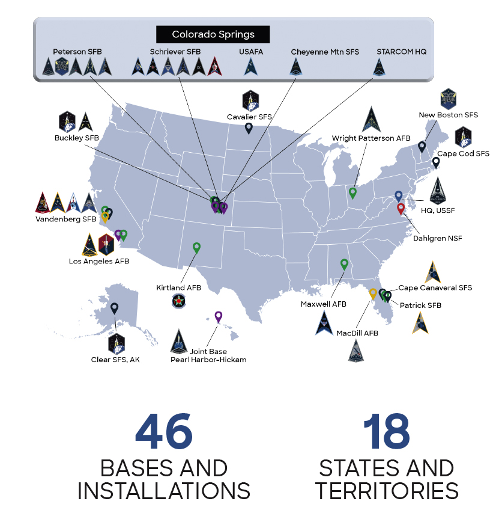

The U.S. Space Force was established on Dec. 20, 2019, creating the first new branch of the armed services since 1947. The Space Force is in charge of the space program and works with over 60 different space organizations in the maing of satellites and their launch into space. The United States Space Force also protects and maintains the GPS satellites that are in charge of directing drivers everywhere as in a conducted research, they discovered that 93% of american drivers depend on their GPS to navitage through the country.
The biggest achievement made by the Space Force was the first National Security Space Launch back in 2020 amidst the COVID pandemic and then also, in December 28 of 2023, the USSF (United States Space Force) launched their first Force Falcon Heavy Launch and it marked and showed the U.S' commitment to their National Defense and advance in technological research that is used all over the cuntry and the globle.
To enlist in the , there are steps you must follow:
For more information you can visit .com